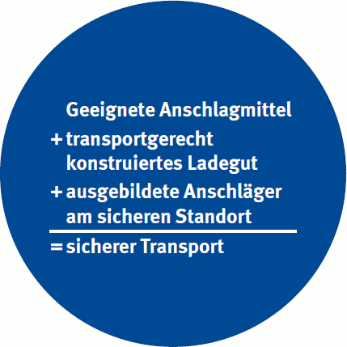

Wir wünschen Ihnen, dass Sie nach dem Durcharbeiten dieses Heftes Ihre verantwortungsvolle Tätigkeit leichter, erfolgreicher und unfallfrei durchführen können. Unfallfrei werden Sie arbeiten können, wenn Sie "Respekt" vor bewegten Lasten haben und Unregelmäßigkeiten mit einkalkulieren.
Der Umgang mit Anschlagmitteln ist einfach, wenn man sich an die wenigen dargestellten Regeln hält. Es ist notwendig, sich als Anschläger praktisch und theoretisch auszubilden. Mit dem Durcharbeiten dieses Heftes haben Sie dazu schon einen guten Schritt getan.
